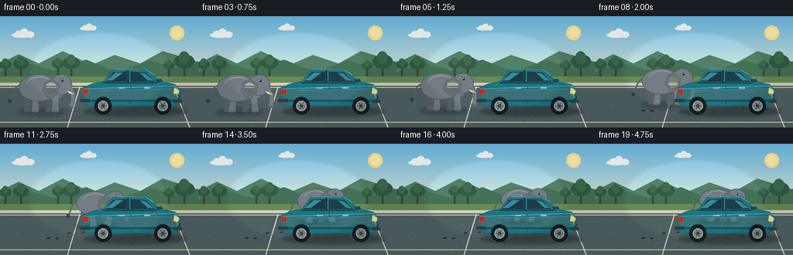
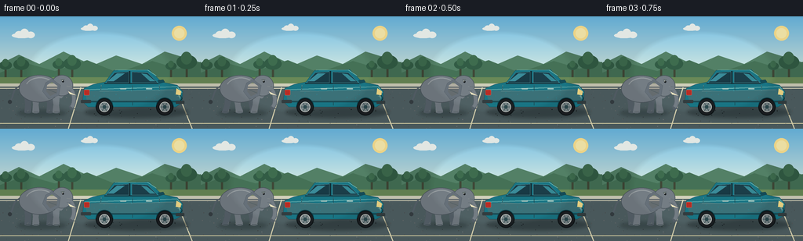
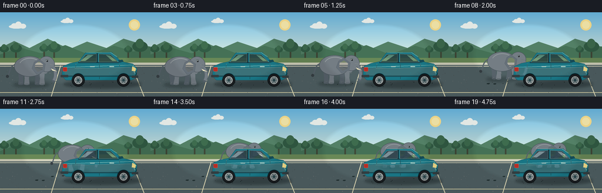
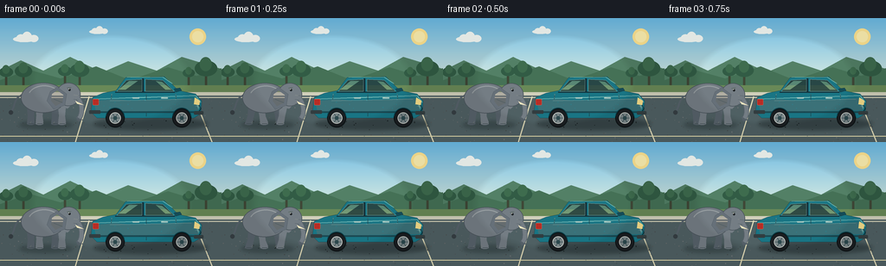

CODING AGENTS AS PIXEL WORLD MODELS
traex/GPT-5.6-Sol · dynamic_spatial_relationship_0063
点击播放 · 原生 RGB 像素
逐轮保存的候选
回放视频、检查图与代码变化。
每份候选均可单独播放。实际图片检查记录在下方工具轨迹中。
候选 01播放与检查图
点击播放 · 原生 RGB 像素


展开代码变化
--- 上一保存版本
+++ 本次保存版本
@@ -0,0 +1,305 @@
+from pathlib import Path
+import math
+import numpy as np
+from PIL import Image, ImageDraw, ImageFilter
+from artifact_io import save
+
+# Deterministic vector-style animation, rendered large and downsampled for antialiasing.
+W, H, N = 256, 144, 20
+SS = 4
+CW, CH = W * SS, H * SS
+ROOT = Path(__file__).resolve().parent
+
+
+def sc(v):
+ return int(round(v * SS))
+
+
+def pts(seq):
+ return [(sc(x), sc(y)) for x, y in seq]
+
+
+def box(b):
+ return tuple(sc(v) for v in b)
+
+
+def bezier(p0, p1, p2, p3, steps=24):
+ out = []
+ for i in range(steps + 1):
+ t = i / steps
+ q = 1 - t
+ out.append((q**3*p0[0] + 3*q*q*t*p1[0] + 3*q*t*t*p2[0] + t**3*p3[0],
+ q**3*p0[1] + 3*q*q*t*p1[1] + 3*q*t*t*p2[1] + t**3*p3[1]))
+ return out
+
+
+def smoothstep(x):
+ x = max(0.0, min(1.0, x))
+ return x*x*(3-2*x)
+
+
+def fill_gradient(img):
+ a = np.zeros((CH, CW, 3), dtype=np.uint8)
+ for y in range(CH):
+ yy = y / SS
+ if yy < 79:
+ t = yy / 79
+ c0 = np.array([106, 185, 228.])
+ c1 = np.array([224, 238, 224.])
+ c = c0*(1-t) + c1*t
+ else:
+ t = min(1, (yy-79)/65)
+ c0 = np.array([126, 151, 139.])
+ c1 = np.array([73, 92, 97.])
+ c = c0*(1-t) + c1*t
+ a[y, :, :] = c.astype(np.uint8)
+ img.paste(Image.fromarray(a))
+
+
+def cloud(draw, x, y, s=1):
+ col = (245, 250, 246, 215)
+ draw.ellipse(box((x, y+4*s, x+35*s, y+13*s)), fill=col)
+ draw.ellipse(box((x+5*s, y+1*s, x+19*s, y+13*s)), fill=col)
+ draw.ellipse(box((x+14*s, y-3*s, x+29*s, y+13*s)), fill=col)
+ draw.ellipse(box((x+25*s, y+2*s, x+39*s, y+13*s)), fill=col)
+
+
+def draw_background(img):
+ fill_gradient(img)
+ d = ImageDraw.Draw(img, 'RGBA')
+ # Sun and quiet clouds.
+ d.ellipse(box((219, 12, 238, 31)), fill=(255, 229, 146, 115))
+ d.ellipse(box((222, 15, 235, 28)), fill=(255, 240, 177, 220))
+ cloud(d, 15, 18, .75)
+ cloud(d, 103, 11, .55)
+ # Distant rolling landscape.
+ d.polygon(pts([(0,61),(24,49),(50,61),(81,45),(118,63),(148,50),(181,61),(210,45),(256,59),(256,87),(0,87)]), fill=(83,128,102,255))
+ d.polygon(pts([(0,72),(34,60),(70,70),(111,56),(150,72),(194,57),(227,67),(256,58),(256,91),(0,91)]), fill=(69,113,86,255))
+ # Tree silhouettes, small and distant.
+ for x, y, r in [(7,63,8),(27,62,10),(75,62,8),(92,61,11),(238,59,13),(218,64,7)]:
+ d.rectangle(box((x-1.2,y,x+1.2,82)), fill=(63,72,55,255))
+ d.ellipse(box((x-r,y-r*.75,x+r,y+r*.65)), fill=(50,92,69,255))
+ d.ellipse(box((x-r*.55,y-r*1.05,x+r*.5,y+r*.2)), fill=(62,108,78,255))
+ # Far grass verge, curb and road.
+ d.rectangle(box((0,78,256,88)), fill=(105,137,87,255))
+ d.rectangle(box((0,86,256,90)), fill=(208,207,186,255))
+ d.polygon(pts([(0,90),(256,90),(256,144),(0,144)]), fill=(79,96,99,255))
+ d.line(pts([(0,92),(256,92)]), fill=(230,225,196,185), width=sc(1))
+ # Parking bay perspective markings.
+ d.line(pts([(87,144),(103,91)]), fill=(226,220,184,115), width=sc(1.2))
+ d.line(pts([(245,144),(224,91)]), fill=(226,220,184,115), width=sc(1.2))
+ d.line(pts([(0,137),(256,137)]), fill=(229,220,172,90), width=sc(1))
+ # Fine, stable road texture.
+ rng = np.random.default_rng(6301)
+ for _ in range(190):
+ x = float(rng.uniform(0, 256)); y = float(rng.uniform(93, 144))
+ val = int(rng.integers(70, 120)); alpha = int(rng.integers(15, 48))
+ r = float(rng.uniform(.18, .55))
+ d.ellipse(box((x-r,y-r,x+r,y+r)), fill=(val,val+5,val+6,alpha))
+
+
+def draw_footprints(img, progress, frame):
+ if progress <= .02:
+ return
+ d = ImageDraw.Draw(img, 'RGBA')
+ # Curving diagonal trail; later prints are farther away and smaller.
+ for j in range(7):
+ u = (j+1)/8
+ if u > progress + .04:
+ continue
+ e = smoothstep(u)
+ x = 58 + 98*e
+ y = 124 - 23*e + (2.0 if j%2 else -1.0)
+ size = 1.65 - .55*e
+ fade = int(75 * max(.2, 1-(progress-u)*.62))
+ d.ellipse(box((x-size*1.5,y-size*.6,x+size*1.5,y+size*.6)), fill=(35,50,51,fade))
+ d.ellipse(box((x+size*1.0,y-size*.8,x+size*1.5,y-size*.35)), fill=(35,50,51,fade//2))
+
+
+def draw_shadow(img, cx, cy, rx, ry, alpha=95):
+ layer = Image.new('RGBA', (CW, CH), (0,0,0,0))
+ d = ImageDraw.Draw(layer, 'RGBA')
+ d.ellipse(box((cx-rx,cy-ry,cx+rx,cy+ry)), fill=(20,29,31,alpha))
+ layer = layer.filter(ImageFilter.GaussianBlur(sc(2.2)))
+ img.alpha_composite(layer)
+
+
+def draw_elephant(img, anchor_x, ground_y, scale, phase, moving):
+ # Elephant is a side-view animal facing right. Local coords use feet/ground as y=0.
+ layer = Image.new('RGBA', (CW, CH), (0,0,0,0))
+ d = ImageDraw.Draw(layer, 'RGBA')
+ def T(x, y): return (anchor_x + x*scale, ground_y + y*scale)
+ def poly(q, **kw): d.polygon(pts([T(x,y) for x,y in q]), **kw)
+ def ell(q, **kw):
+ x0,y0=T(q[0],q[1]); x1,y1=T(q[2],q[3]); d.ellipse(box((x0,y0,x1,y1)), **kw)
+ def line(q, **kw): d.line(pts([T(x,y) for x,y in q]), **kw)
+
+ # Ground shadow belongs to same depth layer as elephant.
+ draw_shadow(img, anchor_x-2*scale, ground_y+1, 31*scale, 4.5*scale, 78)
+
+ skin = (116, 125, 132, 255)
+ skin_dark = (87, 98, 106, 255)
+ skin_light = (150, 157, 160, 255)
+ ear = (102, 112, 121, 255)
+ wrinkle = (70, 82, 90, 105)
+ gait = math.sin(phase)
+ bob = (-1.15*abs(math.sin(phase))) if moving else (.45*math.sin(phase*.5))
+
+ # Tail behind body, with a dark tuft.
+ tail_curve = bezier(T(-29,-34+bob), T(-40,-31+bob), T(-38,-17), T(-43,-14), 15)
+ d.line(pts(tail_curve), fill=skin_dark, width=max(1,sc(2.0*scale)))
+ ell((-45,-16,-40,-11), fill=(55,63,68,255))
+
+ # Far legs, alternating in a natural four-beat gait.
+ leg_data = [(-19, -4.4*gait, skin_dark), (9, 4.4*gait, skin_dark),
+ (-9, 4.1*gait, skin), (17, -4.1*gait, skin)]
+ for i,(lx,swing,col) in enumerate(leg_data):
+ hip_y = -21+bob
+ knee_x = lx + swing*.45
+ foot_x = lx + swing
+ # broad tapered leg with rounded foot
+ poly([(lx-5,hip_y),(lx+4,hip_y),(knee_x+3,-9),(foot_x+4,-2),(foot_x+3,0),(foot_x-5,0),(knee_x-4,-10)], fill=col)
+ ell((foot_x-5,-2,foot_x+4,1), fill=col)
+ line([(foot_x-3,-.5),(foot_x+3,-.5)], fill=(62,72,78,100), width=max(1,sc(.55*scale)))
+
+ # Large body and a soft dorsal highlight.
+ ell((-31,-48+bob,21,-13+bob), fill=skin, outline=(76,86,93,255), width=max(1,sc(.8*scale)))
+ arcbox = box((anchor_x-23*scale,ground_y+(-45+bob)*scale,anchor_x+15*scale,ground_y+(-18+bob)*scale))
+ d.arc(arcbox, 202, 328, fill=skin_light, width=max(1,sc(1.15*scale)))
+
+ # Neck bridge and head.
+ poly([(9,-42+bob),(28,-42+bob),(34,-29+bob),(23,-18+bob),(10,-21+bob)], fill=skin)
+ ell((10,-48+bob,38,-21+bob), fill=skin, outline=(75,85,92,255), width=max(1,sc(.75*scale)))
+
+ # Huge ear is the most recognizable feature.
+ ear_sway = 1.0*math.sin(phase*.75) if moving else .4*math.sin(phase*.3)
+ ear_poly = [(11,-43+bob),(3+ear_sway,-38+bob),(-1+ear_sway,-27+bob),(7,-17+bob),
+ (20,-22+bob),(22,-35+bob)]
+ poly(ear_poly, fill=ear, outline=(73,84,92,255))
+ inner = [(11,-39+bob),(5+ear_sway,-35+bob),(4+ear_sway,-27+bob),(9,-21+bob),(17,-25+bob),(18,-34+bob)]
+ poly(inner, fill=(133,126,128,105))
+ line([(7,-29+bob),(17,-25+bob)], fill=wrinkle, width=max(1,sc(.65*scale)))
+
+ # Forehead, eye and brow.
+ ell((24,-41+bob,26.5,-38.5+bob), fill=(26,31,34,255))
+ ell((24.25,-40.9+bob,24.9,-40.25+bob), fill=(243,241,217,255))
+ line([(22.5,-42+bob),(27,-42.5+bob)], fill=(58,68,74,170), width=max(1,sc(.65*scale)))
+
+ # Animated trunk: a thick curved stroke tapering toward its curled tip.
+ sway = (3.2*math.sin(phase+0.8)) if moving else (1.0*math.sin(phase*.4))
+ p0=T(35,-30+bob); p1=T(42,-20+bob); p2=T(39+sway,-7); p3=T(34+sway,-5)
+ curve=bezier(p0,p1,p2,p3,24)
+ d.line(pts(curve), fill=skin_dark, width=max(2,sc(6.0*scale)), joint='curve')
+ d.line(pts(curve[:-4]), fill=skin, width=max(2,sc(4.4*scale)), joint='curve')
+ # Curled tip.
+ tip=[T(34+sway,-5),T(36+sway,-3.8),T(39+sway,-5.4)]
+ d.line(pts(tip), fill=skin_dark, width=max(1,sc(2.0*scale)), joint='curve')
+
+ # Small ivory tusk.
+ poly([(32,-27+bob),(42,-22+bob),(34,-23.5+bob)], fill=(239,230,192,255))
+
+ # Wrinkles and toes, subtle enough to preserve silhouette.
+ for yy,ln in [(-34,7),(-29,6),(-24,5)]:
+ line([(30,yy+bob),(30+ln,yy+1+bob)], fill=wrinkle, width=max(1,sc(.52*scale)))
+ for x in (-18,-9,9,17):
+ line([(x-2,-1),(x-1,-3)], fill=(206,205,185,100), width=max(1,sc(.55*scale)))
+
+ img.alpha_composite(layer)
+
+
+def draw_car(img):
+ # Fixed foreground sedan; broadside view faces right, with clearly marked front/rear.
+ draw_shadow(img, 174, 122.8, 66, 7.0, 105)
+ layer = Image.new('RGBA', (CW, CH), (0,0,0,0))
+ d = ImageDraw.Draw(layer, 'RGBA')
+ teal_dark=(20,75,87,255); teal=(25,117,132,255); teal_light=(49,148,157,255)
+ outline=(19,48,56,255)
+ # Main shell and roof structure.
+ body=[(107,92),(119,87),(134,84),(145,69),(190,68),(206,84),(226,88),(233,96),(232,111),(224,116),(112,116),(105,109)]
+ d.polygon(pts(body), fill=teal, outline=outline)
+ d.line(pts([(108,94),(226,90),(232,98)]), fill=(93,184,186,190), width=sc(1.2))
+ # Windows are translucent: at the ending, the elephant is visibly behind glass.
+ windows = Image.new('RGBA',(CW,CH),(0,0,0,0)); wd=ImageDraw.Draw(windows,'RGBA')
+ wd.polygon(pts([(146,72),(164,71),(164,85),(135,85)]), fill=(24,48,58,218), outline=(177,214,210,150))
+ wd.polygon(pts([(168,71),(188,72),(201,85),(168,85)]), fill=(27,53,63,218), outline=(177,214,210,150))
+ # sky reflections in glass
+ wd.polygon(pts([(149,73),(159,73),(145,83),(137,83)]), fill=(146,198,207,70))
+ wd.polygon(pts([(180,73),(187,74),(198,83),(191,83)]), fill=(153,203,207,55))
+ layer.alpha_composite(windows)
+ d=ImageDraw.Draw(layer,'RGBA')
+ # Pillars, roof rail and doors.
+ d.line(pts([(165,70),(165,86)]), fill=outline, width=sc(2))
+ d.line(pts([(133,86),(202,86)]), fill=outline, width=sc(1.2))
+ d.line(pts([(169,88),(169,114)]), fill=(16,72,83,210), width=sc(.8))
+ d.line(pts([(203,88),(205,112)]), fill=(16,72,83,170), width=sc(.7))
+ d.line(pts([(129,88),(127,112)]), fill=(16,72,83,140), width=sc(.7))
+ # Body contour and lower rocker.
+ d.polygon(pts([(108,96),(133,94),(154,96),(223,93),(231,98),(229,107),(111,109)]), fill=(37,132,144,120))
+ d.line(pts([(112,109),(225,109)]), fill=(11,66,77,190), width=sc(2))
+ d.line(pts([(127,96),(221,94)]), fill=(119,199,197,125), width=sc(.75))
+ # Door handles.
+ for x in (153,186):
+ d.rounded_rectangle(box((x,92,x+8,93.5)), radius=sc(.7), fill=(170,206,200,210))
+ # Rear red lamp on left and bright front lamp/grille on right establish orientation.
+ d.rounded_rectangle(box((107,94,114,101)), radius=sc(1), fill=(184,45,37,255), outline=(252,125,88,220))
+ d.polygon(pts([(225,92),(231,96),(230,101),(224,100)]), fill=(246,221,138,255))
+ d.line(pts([(230,101),(232,105),(230,108)]), fill=(12,52,60,255), width=sc(1))
+ d.line(pts([(226,102),(231,103)]), fill=(151,194,193,170), width=sc(.6))
+ # Bumpers and side mirror.
+ d.rounded_rectangle(box((103,107,116,111)), radius=sc(1), fill=(50,61,64,255))
+ d.rounded_rectangle(box((224,108,235,112)), radius=sc(1), fill=(52,63,65,255))
+ d.polygon(pts([(201,82),(208,81),(210,84),(203,86)]), fill=teal_dark, outline=outline)
+ # Wheels, hubs, and tiny speculars.
+ for cx in (133,210):
+ d.ellipse(box((cx-11,105,cx+11,127)), fill=(26,30,33,255), outline=(12,19,21,255), width=sc(1))
+ d.ellipse(box((cx-6.5,109.5,cx+6.5,122.5)), fill=(124,135,137,255), outline=(207,211,205,255), width=sc(.8))
+ d.ellipse(box((cx-2.2,113.8,cx+2.2,118.2)), fill=(44,72,77,255))
+ for ang in range(0,360,60):
+ a=math.radians(ang); d.line(pts([(cx+2.7*math.cos(a),116+2.7*math.sin(a)),(cx+5.5*math.cos(a),116+5.5*math.sin(a))]),fill=(67,87,90,255),width=sc(.65))
+ # Wheel arches redraw body arcs for polished integration.
+ d.arc(box((122,104,144,126)), 185, 355, fill=(10,61,71,255), width=sc(1))
+ d.arc(box((199,104,221,126)), 185, 355, fill=(10,61,71,255), width=sc(1))
+ # Roof highlight.
+ d.line(pts([(147,68.8),(188,68.5),(199,76)]), fill=(118,200,198,185), width=sc(.8))
+ img.alpha_composite(layer)
+
+
+def add_foreground_vignette(img):
+ # Very light cinematic edge treatment, preserving colors and clarity.
+ yy, xx = np.mgrid[0:CH,0:CW]
+ nx=(xx-CW/2)/(CW/2); ny=(yy-CH/2)/(CH/2)
+ edge=np.clip((nx*nx+ny*ny-.45)*10,0,1)
+ arr=np.array(img.convert('RGB')).astype(np.float32)
+ arr *= (1-.075*edge[...,None])
+ img.paste(Image.fromarray(np.clip(arr,0,255).astype(np.uint8)).convert('RGBA'))
+
+
+def make_frame(i):
+ img=Image.new('RGBA',(CW,CH),(0,0,0,255))
+ draw_background(img)
+ # Hold an unmistakable initial relation, then travel, then settle behind the car.
+ raw=(i-3)/13.0
+ progress=smoothstep(raw)
+ moving=(i>=4 and i<=16)
+ draw_footprints(img, progress, i)
+ x=55 + 107*progress
+ # A curved path goes away from the camera as it approaches the car's depth plane.
+ gy=123 - 23*progress - 2.0*math.sin(math.pi*progress)
+ size=1.0 - .13*progress
+ phase=i*1.22
+ draw_elephant(img,x,gy,size,phase,moving)
+ # Car is always composited after the animal, making 'behind' physically explicit.
+ draw_car(img)
+ add_foreground_vignette(img)
+ out=img.convert('RGB').resize((W,H),Image.Resampling.LANCZOS)
+ return np.asarray(out,dtype=np.uint8)
+
+
+def main():
+ frames=np.stack([make_frame(i) for i in range(N)],axis=0)
+ assert frames.shape==(20,144,256,3) and frames.dtype==np.uint8
+ save(frames,ROOT)
+
+
+if __name__=='__main__':
+ main()
候选 02播放与检查图
点击播放 · 原生 RGB 像素


展开代码变化
--- 上一保存版本
+++ 本次保存版本
@@ -218,15 +218,14 @@
body=[(107,92),(119,87),(134,84),(145,69),(190,68),(206,84),(226,88),(233,96),(232,111),(224,116),(112,116),(105,109)]
d.polygon(pts(body), fill=teal, outline=outline)
d.line(pts([(108,94),(226,90),(232,98)]), fill=(93,184,186,190), width=sc(1.2))
- # Windows are translucent: at the ending, the elephant is visibly behind glass.
- windows = Image.new('RGBA',(CW,CH),(0,0,0,0)); wd=ImageDraw.Draw(windows,'RGBA')
- wd.polygon(pts([(146,72),(164,71),(164,85),(135,85)]), fill=(24,48,58,218), outline=(177,214,210,150))
- wd.polygon(pts([(168,71),(188,72),(201,85),(168,85)]), fill=(27,53,63,218), outline=(177,214,210,150))
- # sky reflections in glass
- wd.polygon(pts([(149,73),(159,73),(145,83),(137,83)]), fill=(146,198,207,70))
- wd.polygon(pts([(180,73),(187,74),(198,83),(191,83)]), fill=(153,203,207,55))
- layer.alpha_composite(windows)
- d=ImageDraw.Draw(layer,'RGBA')
+ # Paint semi-transparent cut-out windows directly into the otherwise opaque
+ # shell. At the ending this lets the animal show faintly through the glass,
+ # while the pillars and lower body strongly occlude it.
+ d.polygon(pts([(146,72),(164,71),(164,85),(135,85)]), fill=(24,48,58,178), outline=(177,214,210,210))
+ d.polygon(pts([(168,71),(188,72),(201,85),(168,85)]), fill=(27,53,63,178), outline=(177,214,210,210))
+ # Sky reflections in glass.
+ d.polygon(pts([(149,73),(159,73),(145,83),(137,83)]), fill=(146,198,207,65))
+ d.polygon(pts([(180,73),(187,74),(198,83),(191,83)]), fill=(153,203,207,55))
# Pillars, roof rail and doors.
d.line(pts([(165,70),(165,86)]), fill=outline, width=sc(2))
d.line(pts([(133,86),(202,86)]), fill=outline, width=sc(1.2))
可观测工具轨迹
实际执行的命令与返回图片。
命令 1exit 0
/bin/bash -lc "ls -la && find . -maxdepth 2 -type f -printf '%p\\n' | sort"
命令 2exit 0
/bin/bash -lc "printf '%s\\n' '--- prompt.txt ---'; cat prompt.txt; printf '%s\\n' '--- GENERATION_RULES.md ---'; cat GENERATION_RULES.md; printf '%s\\n' '--- task_spec.json ---'; cat task_spec.json"
命令 3exit 0
/bin/bash -lc "sed -n '1,260p' artifact_io.py && printf '\\n--- player template ---\\n' && sed -n '1,220p' player_template.html && command -v ffmpeg || true && python - <<'PY'
import PIL,numpy
print('PIL',PIL.__version__,'numpy',numpy.__version__)
PY"命令 4exit 0
/bin/bash -lc "cat > generate.py <<'PY'
from pathlib import Path
import math
import numpy as np
from PIL import Image, ImageDraw, ImageFilter
from artifact_io import save
# Deterministic vector-style animation, rendered large and downsampled for antialiasing.
W, H, N = 256, 144, 20
SS = 4
CW, CH = W * SS, H * SS
ROOT = Path(__file__).resolve().parent
def sc(v):
return int(round(v * SS))
def pts(seq):
return [(sc(x), sc(y)) for x, y in seq]
def box(b):
return tuple(sc(v) for v in b)
def bezier(p0, p1, p2, p3, steps=24):
out = []
for i in range(steps + 1):
t = i / steps
q = 1 - t
out.append((q**3*p0[0] + 3*q*q*t*p1[0] + 3*q*t*t*p2[0] + t**3*p3[0],
q**3*p0[1] + 3*q*q*t*p1[1] + 3*q*t*t*p2[1] + t**3*p3[1]))
return out
def smoothstep(x):
x = max(0.0, min(1.0, x))
return x*x*(3-2*x)
def fill_gradient(img):
a = np.zeros((CH, CW, 3), dtype=np.uint8)
for y in range(CH):
yy = y / SS
if yy < 79:
t = yy / 79
c0 = np.array([106, 185, 228.])
c1 = np.array([224, 238, 224.])
c = c0*(1-t) + c1*t
else:
t = min(1, (yy-79)/65)
c0 = np.array([126, 151, 139.])
c1 = np.array([73, 92, 97.])
c = c0*(1-t) + c1*t
a[y, :, :] = c.astype(np.uint8)
img.paste(Image.fromarray(a))
def cloud(draw, x, y, s=1):
col = (245, 250, 246, 215)
draw.ellipse(box((x, y+4*s, x+35*s, y+13*s)), fill=col)
draw.ellipse(box((x+5*s, y+1*s, x+19*s, y+13*s)), fill=col)
draw.ellipse(box((x+14*s, y-3*s, x+29*s, y+13*s)), fill=col)
draw.ellipse(box((x+25*s, y+2*s, x+39*s, y+13*s)), fill=col)
def draw_background(img):
fill_gradient(img)
d = ImageDraw.Draw(img, 'RGBA')
# Sun and quiet clouds.
d.ellipse(box((219, 12, 238, 31)), fill=(255, 229, 146, 115))
d.ellipse(box((222, 15, 235, 28)), fill=(255, 240, 177, 220))
cloud(d, 15, 18, .75)
cloud(d, 103, 11, .55)
# Distant rolling landscape.
d.polygon(pts([(0,61),(24,49),(50,61),(81,45),(118,63),(148,50),(181,61),(210,45),(256,59),(256,87),(0,87)]), fill=(83,128,102,255))
d.polygon(pts([(0,72),(34,60),(70,70),(111,56),(150,72),(194,57),(227,67),(256,58),(256,91),(0,91)]), fill=(69,113,86,255))
# Tree silhouettes, small and distant.
for x, y, r in [(7,63,8),(27,62,10),(75,62,8),(92,61,11),(238,59,13),(218,64,7)]:
d.rectangle(box((x-1.2,y,x+1.2,82)), fill=(63,72,55,255))
d.ellipse(box((x-r,y-r*.75,x+r,y+r*.65)), fill=(50,92,69,255))
d.ellipse(box((x-r*.55,y-r*1.05,x+r*.5,y+r*.2)), fill=(62,108,78,255))
# Far grass verge, curb and road.
d.rectangle(box((0,78,256,88)), fill=(105,137,87,255))
d.rectangle(box((0,86,256,90)), fill=(208,207,186,255))
d.polygon(pts([(0,90),(256,90),(256,144),(0,144)]), fill=(79,96,99,255))
d.line(pts([(0,92),(256,92)]), fill=(230,225,196,185), width=sc(1))
# Parking bay perspective markings.
d.line(pts([(87,144),(103,91)]), fill=(226,220,184,115), width=sc(1.2))
d.line(pts([(245,144),(224,91)]), fill=(226,220,184,115), width=sc(1.2))
d.line(pts([(0,137),(256,137)]), fill=(229,220,172,90), width=sc(1))
# Fine, stable road texture.
rng = np.random.default_rng(6301)
for _ in range(190):
x = float(rng.uniform(0, 256)); y = float(rng.uniform(93, 144))
val = int(rng.integers(70, 120)); alpha = int(rng.integers(15, 48))
r = float(rng.uniform(.18, .55))
d.ellipse(box((x-r,y-r,x+r,y+r)), fill=(val,val+5,val+6,alpha))
def draw_footprints(img, progress, frame):
if progress <= .02:
return
d = ImageDraw.Draw(img, 'RGBA')
# Curving diagonal trail; later prints are farther away and smaller.
for j in range(7):
u = (j+1)/8
if u > progress + .04:
continue
e = smoothstep(u)
x = 58 + 98*e
y = 124 - 23*e + (2.0 if j%2 else -1.0)
size = 1.65 - .55*e
fade = int(75 * max(.2, 1-(progress-u)*.62))
d.ellipse(box((x-size*1.5,y-size*.6,x+size*1.5,y+size*.6)), fill=(35,50,51,fade))
d.ellipse(box((x+size*1.0,y-size*.8,x+size*1.5,y-size*.35)), fill=(35,50,51,fade//2))
def draw_shadow(img, cx, cy, rx, ry, alpha=95):
layer = Image.new('RGBA', (CW, CH), (0,0,0,0))
d = ImageDraw.Draw(layer, 'RGBA')
d.ellipse(box((cx-rx,cy-ry,cx+rx,cy+ry)), fill=(20,29,31,alpha))
layer = layer.filter(ImageFilter.GaussianBlur(sc(2.2)))
img.alpha_composite(layer)
def draw_elephant(img, anchor_x, ground_y, scale, phase, moving):
# Elephant is a side-view animal facing right. Local coords use feet/ground as y=0.
layer = Image.new('RGBA', (CW, CH), (0,0,0,0))
d = ImageDraw.Draw(layer, 'RGBA')
def T(x, y): return (anchor_x + x*scale, ground_y + y*scale)
def poly(q, **kw): d.polygon(pts([T(x,y) for x,y in q]), **kw)
def ell(q, **kw):
x0,y0=T(q[0],q[1]); x1,y1=T(q[2],q[3]); d.ellipse(box((x0,y0,x1,y1)), **kw)
def line(q, **kw): d.line(pts([T(x,y) for x,y in q]), **kw)
# Ground shadow belongs to same depth layer as elephant.
draw_shadow(img, anchor_x-2*scale, ground_y+1, 31*scale, 4.5*scale, 78)
skin = (116, 125, 132, 255)
skin_dark = (87, 98, 106, 255)
skin_light = (150, 157, 160, 255)
ear = (102, 112, 121, 255)
wrinkle = (70, 82, 90, 105)
gait = math.sin(phase)
bob = (-1.15*abs(math.sin(phase))) if moving else (.45*math.sin(phase*.5))
# Tail behind body, with a dark tuft.
tail_curve = bezier(T(-29,-34+bob), T(-40,-31+bob), T(-38,-17), T(-43,-14), 15)
d.line(pts(tail_curve), fill=skin_dark, width=max(1,sc(2.0*scale)))
ell((-45,-16,-40,-11), fill=(55,63,68,255))
# Far legs, alternating in a natural four-beat gait.
leg_data = [(-19, -4.4*gait, skin_dark), (9, 4.4*gait, skin_dark),
(-9, 4.1*gait, skin), (17, -4.1*gait, skin)]
for i,(lx,swing,col) in enumerate(leg_data):
hip_y = -21+bob
knee_x = lx + swing*.45
foot_x = lx + swing
# broad tapered leg with rounded foot
poly([(lx-5,hip_y),(lx+4,hip_y),(knee_x+3,-9),(foot_x+4,-2),(foot_x+3,0),(foot_x-5,0),(knee_x-4,-10)], fill=col)
ell((foot_x-5,-2,foot_x+4,1), fill=col)
line([(foot_x-3,-.5),(foot_x+3,-.5)], fill=(62,72,78,100), width=max(1,sc(.55*scale)))
# Large body and a soft dorsal highlight.
ell((-31,-48+bob,21,-13+bob), fill=skin, outline=(76,86,93,255), width=max(1,sc(.8*scale)))
arcbox = box((anchor_x-23*scale,ground_y+(-45+bob)*scale,anchor_x+15*scale,ground_y+(-18+bob)*scale))
d.arc(arcbox, 202, 328, fill=skin_light, width=max(1,sc(1.15*scale)))
# Neck bridge and head.
poly([(9,-42+bob),(28,-42+bob),(34,-29+bob),(23,-18+bob),(10,-21+bob)], fill=skin)
ell((10,-48+bob,38,-21+bob), fill=skin, outline=(75,85,92,255), width=max(1,sc(.75*scale)))
# Huge ear is the most recognizable feature.
ear_sway = 1.0*math.sin(phase*.75) if moving else .4*math.sin(phase*.3)
ear_poly = [(11,-43+bob),(3+ear_sway,-38+bob),(-1+ear_sway,-27+bob),(7,-17+bob),
(20,-22+bob),(22,-35+bob)]
poly(ear_poly, fill=ear, outline=(73,84,92,255))
inner = [(11,-39+bob),(5+ear_sway,-35+bob),(4+ear_sway,-27+bob),(9,-21+bob),(17,-25+bob),(18,-34+bob)]
poly(inner, fill=(133,126,128,105))
line([(7,-29+bob),(17,-25+bob)], fill=wrinkle, width=max(1,sc(.65*scale)))
# Forehead, eye and brow.
ell((24,-41+bob,26.5,-38.5+bob), fill=(26,31,34,255))
ell((24.25,-40.9+bob,24.9,-40.25+bob), fill=(243,241,217,255))
line([(22.5,-42+bob),(27,-42.5+bob)], fill=(58,68,74,170), width=max(1,sc(.65*scale)))
# Animated trunk: a thick curved stroke tapering toward its curled tip.
sway = (3.2*math.sin(phase+0.8)) if moving else (1.0*math.sin(phase*.4))
p0=T(35,-30+bob); p1=T(42,-20+bob); p2=T(39+sway,-7); p3=T(34+sway,-5)
curve=bezier(p0,p1,p2,p3,24)
d.line(pts(curve), fill=skin_dark, width=max(2,sc(6.0*scale)), joint='curve')
d.line(pts(curve[:-4]), fill=skin, width=max(2,sc(4.4*scale)), joint='curve')
# Curled tip.
tip=[T(34+sway,-5),T(36+sway,-3.8),T(39+sway,-5.4)]
d.line(pts(tip), fill=skin_dark, width=max(1,sc(2.0*scale)), joint='curve')
# Small ivory tusk.
poly([(32,-27+bob),(42,-22+bob),(34,-23.5+bob)], fill=(239,230,192,255))
# Wrinkles and toes, subtle enough to preserve silhouette.
for yy,ln in [(-34,7),(-29,6),(-24,5)]:
line([(30,yy+bob),(30+ln,yy+1+bob)], fill=wrinkle, width=max(1,sc(.52*scale)))
for x in (-18,-9,9,17):
line([(x-2,-1),(x-1,-3)], fill=(206,205,185,100), width=max(1,sc(.55*scale)))
img.alpha_composite(layer)
def draw_car(img):
# Fixed foreground sedan; broadside view faces right, with clearly marked front/rear.
draw_shadow(img, 174, 122.8, 66, 7.0, 105)
layer = Image.new('RGBA', (CW, CH), (0,0,0,0))
d = ImageDraw.Draw(layer, 'RGBA')
teal_dark=(20,75,87,255); teal=(25,117,132,255); teal_light=(49,148,157,255)
outline=(19,48,56,255)
# Main shell and roof structure.
body=[(107,92),(119,87),(134,84),(145,69),(190,68),(206,84),(226,88),(233,96),(232,111),(224,116),(112,116),(105,109)]
d.polygon(pts(body), fill=teal, outline=outline)
d.line(pts([(108,94),(226,90),(232,98)]), fill=(93,184,186,190), width=sc(1.2))
# Windows are translucent: at the ending, the elephant is visibly behind glass.
windows = Image.new('RGBA',(CW,CH),(0,0,0,0)); wd=ImageDraw.Draw(windows,'RGBA')
wd.polygon(pts([(146,72),(164,71),(164,85),(135,85)]), fill=(24,48,58,218), outline=(177,214,210,150))
wd.polygon(pts([(168,71),(188,72),(201,85),(168,85)]), fill=(27,53,63,218), outline=(177,214,210,150))
# sky reflections in glass
wd.polygon(pts([(149,73),(159,73),(145,83),(137,83)]), fill=(146,198,207,70))
wd.polygon(pts([(180,73),(187,74),(198,83),(191,83)]), fill=(153,203,207,55))
layer.alpha_composite(windows)
d=ImageDraw.Draw(layer,'RGBA')
# Pillars, roof rail and doors.
d.line(pts([(165,70),(165,86)]), fill=outline, width=sc(2))
d.line(pts([(133,86),(202,86)]), fill=outline, width=sc(1.2))
d.line(pts([(169,88),(169,114)]), fill=(16,72,83,210), width=sc(.8))
d.line(pts([(203,88),(205,112)]), fill=(16,72,83,170), width=sc(.7))
d.line(pts([(129,88),(127,112)]), fill=(16,72,83,140), width=sc(.7))
# Body contour and lower rocker.
d.polygon(pts([(108,96),(133,94),(154,96),(223,93),(231,98),(229,107),(111,109)]), fill=(37,132,144,120))
d.line(pts([(112,109),(225,109)]), fill=(11,66,77,190), width=sc(2))
d.line(pts([(127,96),(221,94)]), fill=(119,199,197,125), width=sc(.75))
# Door handles.
for x in (153,186):
d.rounded_rectangle(box((x,92,x+8,93.5)), radius=sc(.7), fill=(170,206,200,210))
# Rear red lamp on left and bright front lamp/grille on right establish orientation.
d.rounded_rectangle(box((107,94,114,101)), radius=sc(1), fill=(184,45,37,255), outline=(252,125,88,220))
d.polygon(pts([(225,92),(231,96),(230,101),(224,100)]), fill=(246,221,138,255))
d.line(pts([(230,101),(232,105),(230,108)]), fill=(12,52,60,255), width=sc(1))
d.line(pts([(226,102),(231,103)]), fill=(151,194,193,170), width=sc(.6))
# Bumpers and side mirror.
d.rounded_rectangle(box((103,107,116,111)), radius=sc(1), fill=(50,61,64,255))
d.rounded_rectangle(box((224,108,235,112)), radius=sc(1), fill=(52,63,65,255))
d.polygon(pts([(201,82),(208,81),(210,84),(203,86)]), fill=teal_dark, outline=outline)
# Wheels, hubs, and tiny speculars.
for cx in (133,210):
d.ellipse(box((cx-11,105,cx+11,127)), fill=(26,30,33,255), outline=(12,19,21,255), width=sc(1))
d.ellipse(box((cx-6.5,109.5,cx+6.5,122.5)), fill=(124,135,137,255), outline=(207,211,205,255), width=sc(.8))
d.ellipse(box((cx-2.2,113.8,cx+2.2,118.2)), fill=(44,72,77,255))
for ang in range(0,360,60):
a=math.radians(ang); d.line(pts([(cx+2.7*math.cos(a),116+2.7*math.sin(a)),(cx+5.5*math.cos(a),116+5.5*math.sin(a))]),fill=(67,87,90,255),width=sc(.65))
# Wheel arches redraw body arcs for polished integration.
d.arc(box((122,104,144,126)), 185, 355, fill=(10,61,71,255), width=sc(1))
d.arc(box((199,104,221,126)), 185, 355, fill=(10,61,71,255), width=sc(1))
# Roof highlight.
d.line(pts([(147,68.8),(188,68.5),(199,76)]), fill=(118,200,198,185), width=sc(.8))
img.alpha_composite(layer)
def add_foreground_vignette(img):
# Very light cinematic edge treatment, preserving colors and clarity.
yy, xx = np.mgrid[0:CH,0:CW]
nx=(xx-CW/2)/(CW/2); ny=(yy-CH/2)/(CH/2)
edge=np.clip((nx*nx+ny*ny-.45)*10,0,1)
arr=np.array(img.convert('RGB')).astype(np.float32)
arr *= (1-.075*edge[...,None])
img.paste(Image.fromarray(np.clip(arr,0,255).astype(np.uint8)).convert('RGBA'))
def make_frame(i):
img=Image.new('RGBA',(CW,CH),(0,0,0,255))
draw_background(img)
# Hold an unmistakable initial relation, then travel, then settle behind the car.
raw=(i-3)/13.0
progress=smoothstep(raw)
moving=(i>=4 and i<=16)
draw_footprints(img, progress, i)
x=55 + 107*progress
# A curved path goes away from the camera as it approaches the car's depth plane.
gy=123 - 23*progress - 2.0*math.sin(math.pi*progress)
size=1.0 - .13*progress
phase=i*1.22
draw_elephant(img,x,gy,size,phase,moving)
# Car is always composited after the animal, making 'behind' physically explicit.
draw_car(img)
add_foreground_vignette(img)
out=img.convert('RGB').resize((W,H),Image.Resampling.LANCZOS)
return np.asarray(out,dtype=np.uint8)
def main():
frames=np.stack([make_frame(i) for i in range(N)],axis=0)
assert frames.shape==(20,144,256,3) and frames.dtype==np.uint8
save(frames,ROOT)
if __name__=='__main__':
main()
PY
python generate.py
ls -lh pixels.npz inspection.png transition_check.png index.html frames/00.png frames/19.png"命令 5exit 0
/bin/bash -lc "python - <<'PY'
from PIL import Image
import numpy as np, json, hashlib
from pathlib import Path
p=Path('.')
z=np.load('pixels.npz')['pixels']
print('stored tensor:',z.shape,z.dtype)
# unpack from artifact format to frames
frames=np.stack([np.stack([z[:,:,i]>>16,(z[:,:,i]>>8)&255,z[:,:,i]&255],axis=-1) for i in range(z.shape[2])]).astype(np.uint8)
print('unpacked:',frames.shape,frames.dtype,'range',int(frames.min()),int(frames.max()))
print('all RGB:',all(Image.open(f'frames/{i:02}.png').mode=='RGB' for i in range(20)))
print('all size:',sorted(set(Image.open(f'frames/{i:02}.png').size for i in range(20))))
mad=np.abs(np.diff(frames.astype(np.int16),axis=0)).mean(axis=(1,2,3))
print('adjacent MAD:',np.round(mad,2).tolist())
print('initial hold MAD max:',float(mad[:3].max()),'final hold MAD mean:',float(mad[16:].mean()))
print('frame hashes:',hashlib.sha256(frames[0].tobytes()).hexdigest()[:12],hashlib.sha256(frames[-1].tobytes()).hexdigest()[:12])
# palette GIF for quick local inspection
ims=[Image.fromarray(f) for f in frames]
ims[0].save('preview.gif',save_all=True,append_images=ims[1:],duration=250,loop=0,optimize=False)
print('preview.gif',Path('preview.gif').stat().st_size)
PY"命令 6exit 0
/bin/bash -lc 'python generate.py >/dev/null && sha256sum pixels.npz frames/00.png frames/19.png inspection.png && git status --short 2>/dev/null || true'
命令 7exit 0
/bin/bash -lc "set -e
python -m py_compile generate.py
python generate.py
python - <<'PY'
from pathlib import Path
from PIL import Image
import numpy as np, hashlib
z=np.load('pixels.npz')['pixels']
assert z.shape==(144,256,20) and z.dtype==np.uint32
frames=[]
for i in range(20):
im=Image.open(f'frames/{i:02d}.png')
assert im.mode=='RGB' and im.size==(256,144)
frames.append(im.copy())
frames[0].save('preview.gif',save_all=True,append_images=frames[1:],duration=250,loop=0,optimize=False)
# Verify the generated PNGs exactly encode the packed artifact.
arr=np.stack([np.asarray(im) for im in frames]).astype(np.uint32)
packed=(arr[...,0]<<16)|(arr[...,1]<<8)|arr[...,2]
assert np.array_equal(packed.transpose(1,2,0),z)
print('PASS: 20 RGB frames, 256x144, artifact round-trip exact')
print('Duration:',20/4,'seconds at 4 fps')
print('pixels.npz:',Path('pixels.npz').stat().st_size,'bytes')
print('frame0/frame19:',hashlib.sha256(arr[0].tobytes()).hexdigest()[:16],hashlib.sha256(arr[-1].tobytes()).hexdigest()[:16])
PY
ls -lh generate.py pixels.npz index.html inspection.png preview.gif frames | sed -n '1,30p'"保存候选 2 份；完成命令 7 次；可验证图片返回 0 张。原始 API 响应与完整日志保留在本地。